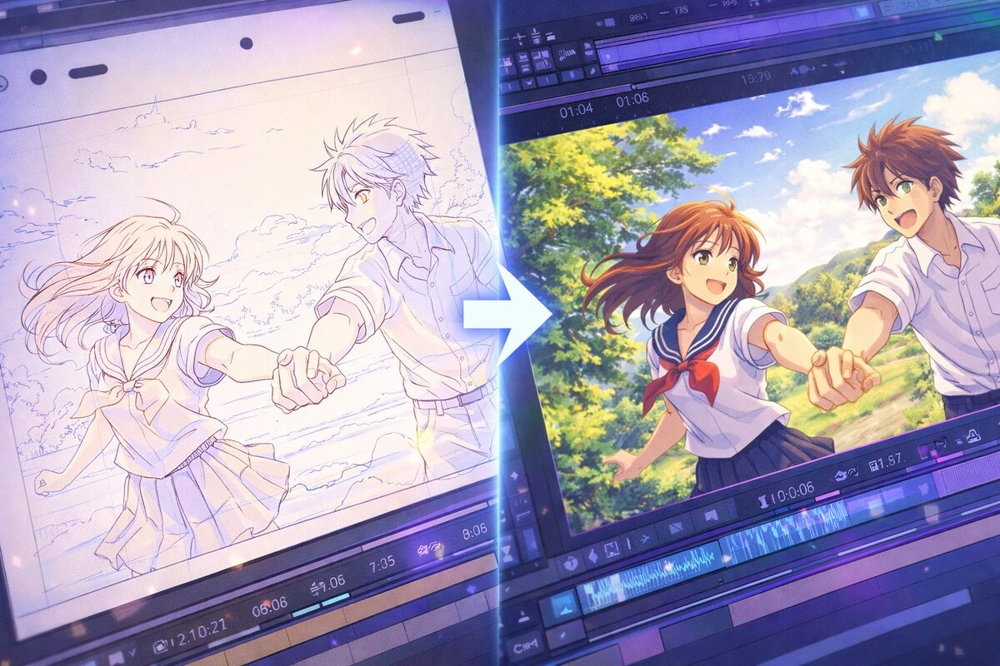
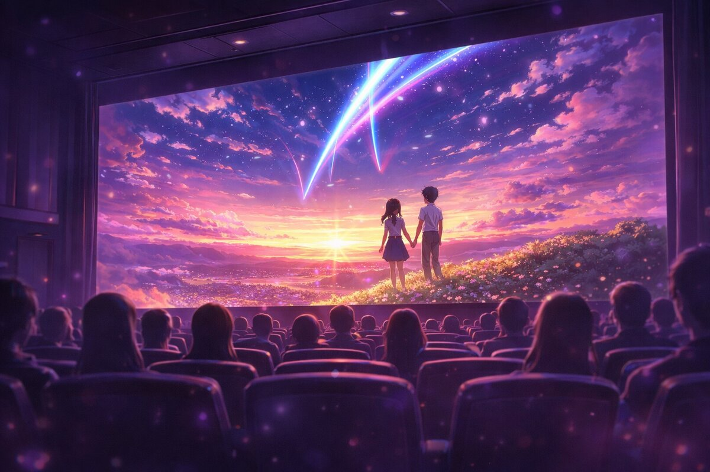
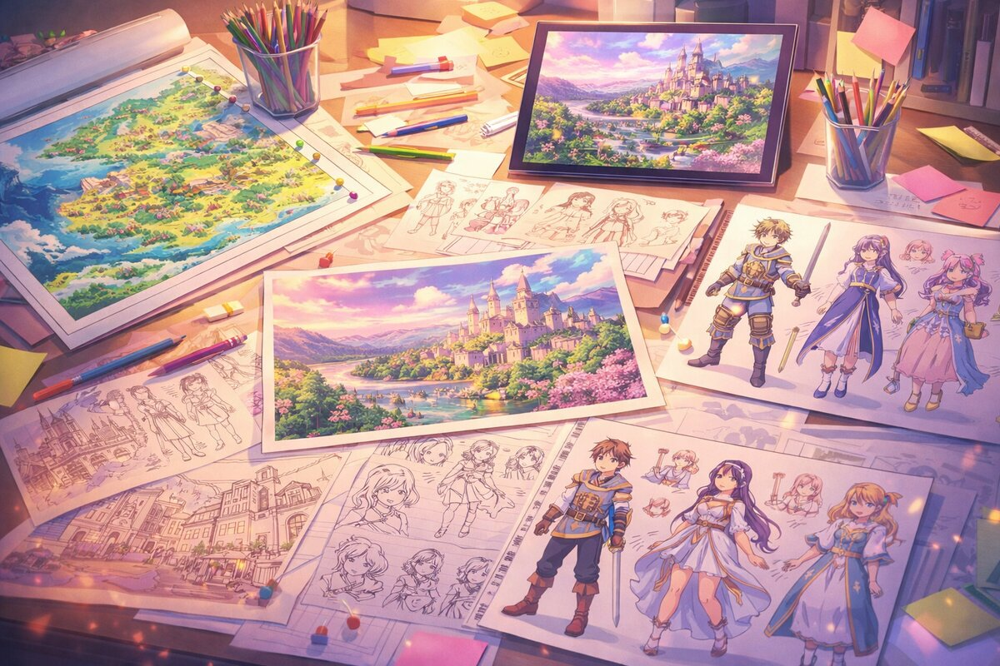

事業内容
企画開発からポストプロダクションまで、一貫した制作体制で高品質な作品をお届けします。

TVアニメーション制作
シリーズ構成から作画・撮影・編集まで、高品質なTVアニメーションを一貫して制作します。元請・グロス請けの両方に対応し、クライアントのニーズに合わせた柔軟な制作体制を構築します。
120名のスタッフが各工程を担当し、毎話安定したクオリティを維持。デジタル作画と撮影の内製化により、表現の自由度とスピードを両立しています。

劇場アニメーション制作
大スクリーン対応の高密度作画と没入感ある音響設計で、劇場作品を制作します。TVシリーズとは異なる、映画ならではの画面設計と演出にこだわります。
劇場版「永遠のセレナーデ」では、水彩タッチの背景美術と繊細な光の表現が評価され、興行収入10億円を突破しました。

企画・プリプロダクション
世界観設計、キャラクターデザイン、コンセプトアート、パイロットフィルムなど、作品の土台となる企画・プリプロダクション業務を承ります。
原作の魅力を映像として最大限に引き出すための設計段階を、経験豊富なクリエイターチームが担当。製作委員会やプロデューサーとの密なコミュニケーションを通じて、作品の方向性を形にします。
Flow
制作フロー
1
ヒアリング
ご要望・作品コンセプトの確認
2
プリプロ
設定・デザイン・絵コンテ制作
3
制作
原画・動画・背景・3DCG
4
ポスプロ
撮影・編集・音響・MA
5
納品
最終チェック・データ納品